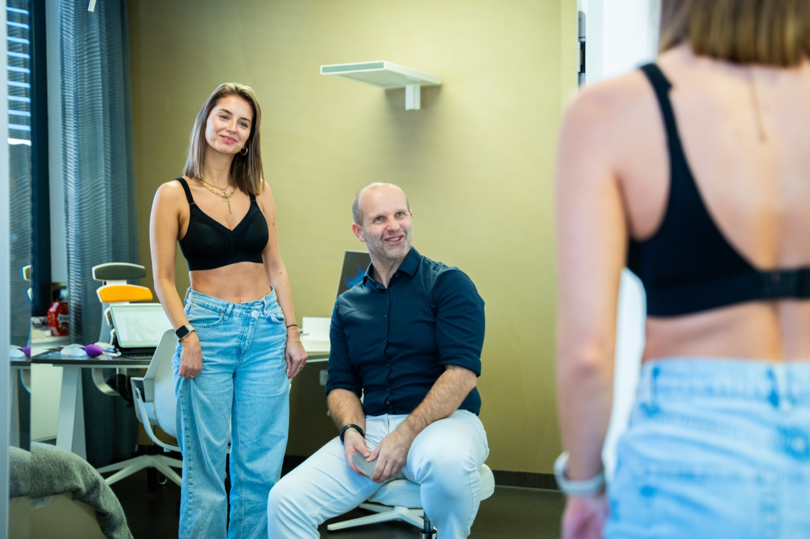

Natürliche Ergebnisse, schonende Methoden und persönliche Betreuung, vom ersten Gespräch bis zur letzten Nachkontrolle. In Schweinfurt, nahe Würzburg.
Alexander Eisenbrand · Facharzt für Plastische & Ästhetische Chirurgie · 15+ Jahre Erfahrung
Wählen Sie Ihre gewünschte Behandlung und erfahren Sie alles über Methoden, Ablauf und Ergebnisse.

Überschüssige Haut dauerhaft entfernen, die Bauchdecke straffen. Auf Wunsch kombiniert mit der schonenden WAL-Fettabsaugung.
Mehr erfahren
Spürbare Entlastung für Rücken und Nacken. Blutarme Operationstechnik mit modernsten Geräten, meist ganz ohne Drainagen.
Mehr erfahren
Jugendlich straffe Brustform nach Schwangerschaft oder Gewichtsabnahme. Drei bewährte Schnitttechniken, individuell gewählt.
Mehr erfahren
Schonende WAL-Liposuktion im Kompetenzzentrum für Lipödem. Weniger Schmerzen, keine sichtbaren Narben, spürbar mehr Lebensqualität.
Mehr erfahren„Über 13 Liter Fett aus den Oberschenkeln sind weg. Ich habe keine Schmerzen mehr und meine Lebensqualität zurück.“
Lipödem-Patientin · Bewertung via Jameda

Facharzt für Plastische & Ästhetische Chirurgie
Seit über 15 Jahren begleitet Alexander Eisenbrand Patientinnen und Patienten auf dem Weg zu einem Körpergefühl, das wieder zu ihnen passt. Er verbindet chirurgische Präzision mit einem feinen Gespür für natürliche Ästhetik.
Seine Philosophie: Beratung, Operation und Nachsorge gehören in eine Hand. Jeder Eingriff wird individuell geplant, ehrlich besprochen und persönlich durchgeführt, ohne Zeitdruck und ohne Standardlösungen.


Spezialist für Liposuktion & Brustchirurgie
Gemeinsam mit Alexander Eisenbrand bildet Dr. Kazarian das Spezialisten-Duo für die wasserstrahl-assistierte Liposuktion (WAL), eine der schonendsten Methoden der Fettabsaugung. Zwei erfahrene Operateure, eine gemeinsame Linie: natürliche Ergebnisse und Patienten, die sich gut aufgehoben fühlen.
Moderne Behandlungs- und OP-Räume, ein eingespieltes Team und eine Atmosphäre, in der Sie sich vom ersten Moment an gut aufgehoben fühlen: Das ist eisenbrand ästhetik.
Zu uns kommen Patientinnen und Patienten aus Schweinfurt, Würzburg, Nürnberg, Frankfurt und weit darüber hinaus.